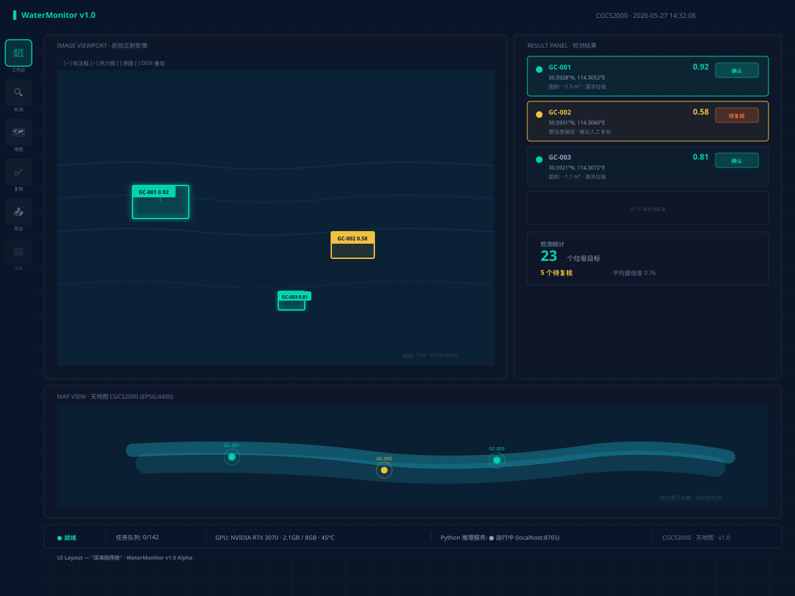

这是一个装在 Windows 电脑上的软件。
就像 Photoshop 一样，打开就能用，不需要联网。
长江勘测规划设计有限责任公司 · 水环院
2026年5月
普通的台式机或笔记本都行
要求：有一块 NVIDIA 独立显卡
推荐：RTX 3060 / 3070 或更好
（简单理解：游戏本或设计用电脑的配置就够）
大疆或其他品牌都行
带可见光相机即可
不需要红外、不需要多光谱
（其实就是拍普通高清照片的无人机）
不需要买服务器，不需要联网，不需要云端账号。就跟你装一个 Photoshop 一样，一台电脑搞定。
就像安装普通软件一样：拿到一个安装包（Setup.exe），双击，选择安装位置，下一步下一步，装完桌面出现图标。双击打开直接能用。
不需要 Python、不需要配置环境、不需要命令行。所有东西都打包好了。
简单类比：就像用"以图搜图"功能，只不过它不是找相似的图片，而是在照片里找垃圾。找到后还把位置标在地图上。
我们给它看了几十张水面垃圾的照片，每张照片里面垃圾在哪我们都帮它圈出来了。AI 通过学习这些例子，自己总结出"什么样的东西是水面垃圾"。
类似教小孩认东西：指给他看"这是瓶子、那是泡沫"，看多了他就认识了。
学会之后，给它一张从来没见过的照片，它就能自己找出："这张照片的这里、这里和这里有垃圾"，同时给出把握有多大。
每次你确认或修正它的判断，它会变得更好。用得越多越聪明。
能让它越来越准吗？能。你在日常使用中每次确认或修正检测结果，系统自动积累经验。积累到一定量后，点一下"更新模型"，它就比以前更准了。这是全自动的。

界面设计预览：左边是照片+检测框，右边是结果列表+统计，底部是地图
就像看图软件一样，显示无人机拍摄的高清照片。检测到的垃圾会被青色方框圈出来，旁边标注编号和可信度。
所有找到的垃圾以列表形式显示。每条显示经纬度、大小、可信度。点哪条，照片和地图上对应位置跟着亮。
所有垃圾点位撒在卫星地图上，一目了然哪些河段垃圾多、分布在哪。可以用天地图。
几个大按钮：导入照片 → 开始检测 → 复核结果 → 导出文件。按顺序点就行。
照片从不离开你的电脑。AI 模型在你自己的显卡上跑，不需要上传到任何服务器。
软件安装后完全离线可用。地图底图可以预先缓存，野外没有网络也能正常使用。
特别适合涉密项目。很多水利项目涉及敏感地理位置信息，这个软件数据不出电脑，完全符合保密要求。
这是一个装在 Windows 电脑上的软件。
把无人机拍的河道照片导进去 →
它自动找出哪里有垃圾 →
在地图上标好位置 →
导出文件交给清理人员。
✅ 一台电脑就行
✅ 不需要联网
✅ 数据不出电脑
✅ 双击就能用
✅ 越用越聪明
✅ 可扩展新功能
详细技术文档: princechow123.github.io/FirstCC/